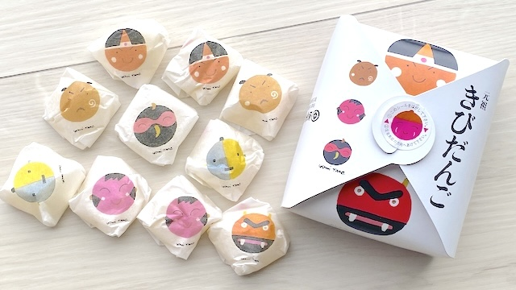
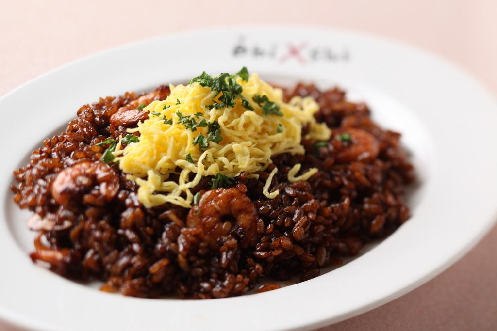
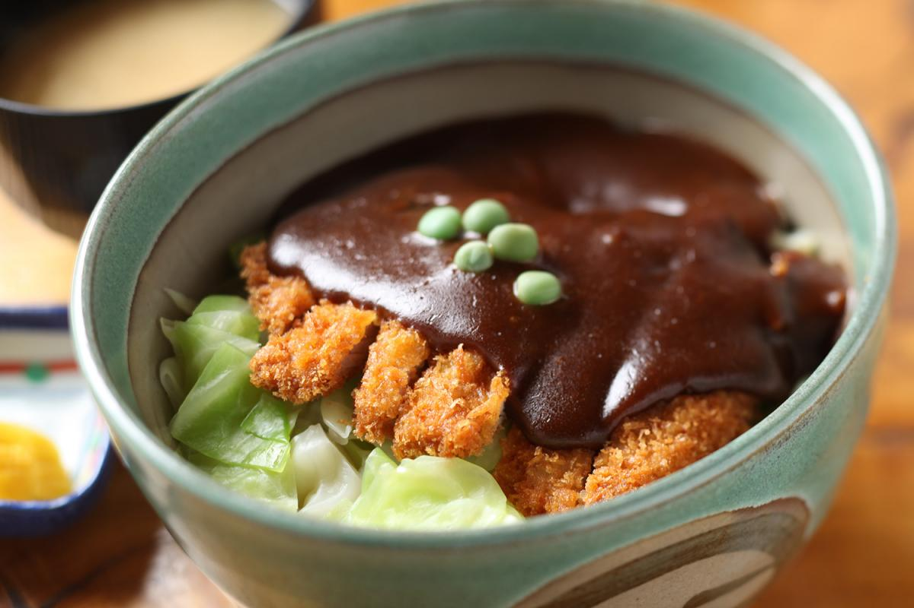

岡山には、地域の魅力を感じられるご当地グルメが数多くあります。新鮮なフルーツを使ったスイーツや、地元ならではの名物料理など、幅広く楽しめるのが特徴です。
岡山県の伝統的な和菓子で、もちもちの食感と程よい甘さが特徴です。桃太郎伝説でも知られるこのお菓子は、観光土産としても人気があります。現在では、プレーン味だけではなく、桃や抹茶などのいろいろな味のきびだんごも販売されています。

＜岡山観光WEBより引用＞
人気のご当地洋食グルメ「えびめし」は、カラメルソースとケチャップ、カレー粉などを合わせたものにスパイスを聞かせたソースを使った独特の焼飯。甘辛く、香ばしいのでソースは、お店ごとに様々な隠し味を施してオリジナルの味を出しています。
黒い見た目もインパクトがあり、一度食べるとクセになります。

＜岡山観光WEBより引用＞
とんかつにデミグラスソースをかけた岡山ご当地丼。1931年創業、老舗とんかつ店「味司 野村」がデミカツ丼発祥の店として知られています。初代店主が帝国ホテルのドミグラスソースを食し、「その味を地元の人たちに食べてほしい」という思いから誕生したそうです。今では、岡山県内でデミカツ丼を提供するお店が増え、岡山を代表するご当地グルメになっています。
